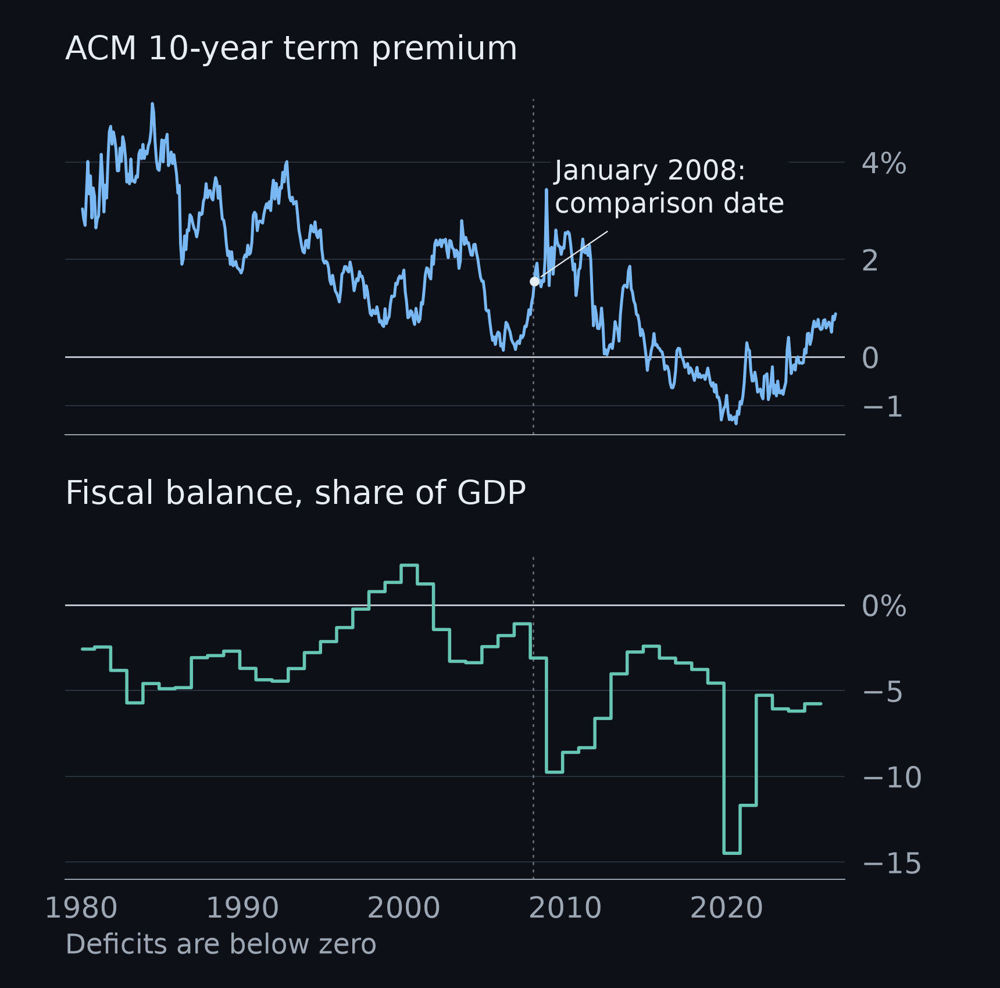
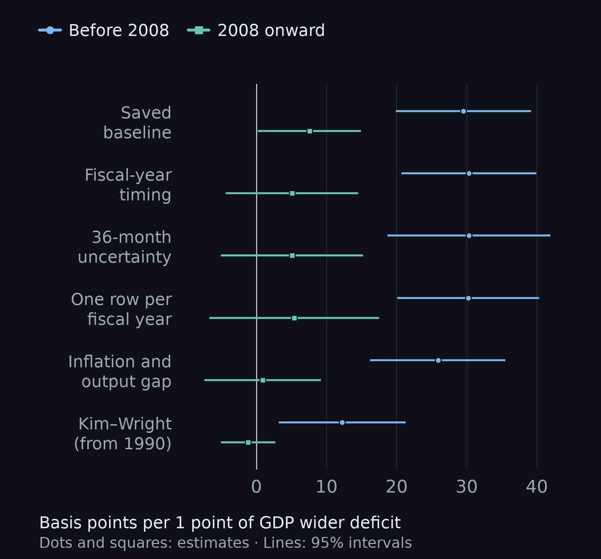
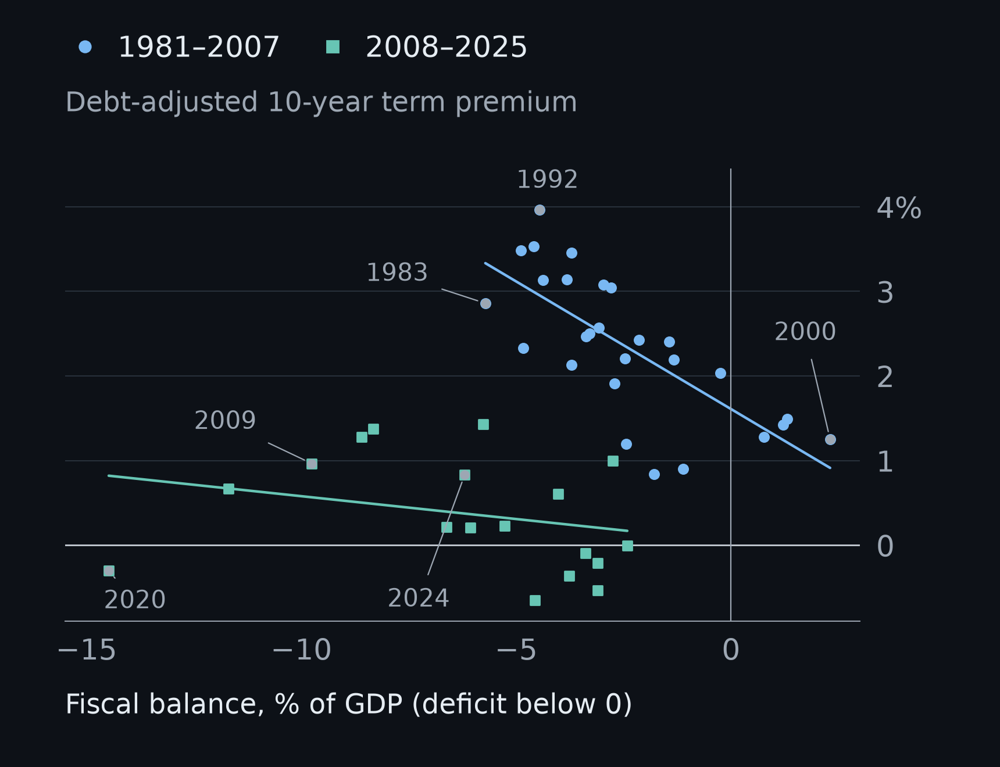
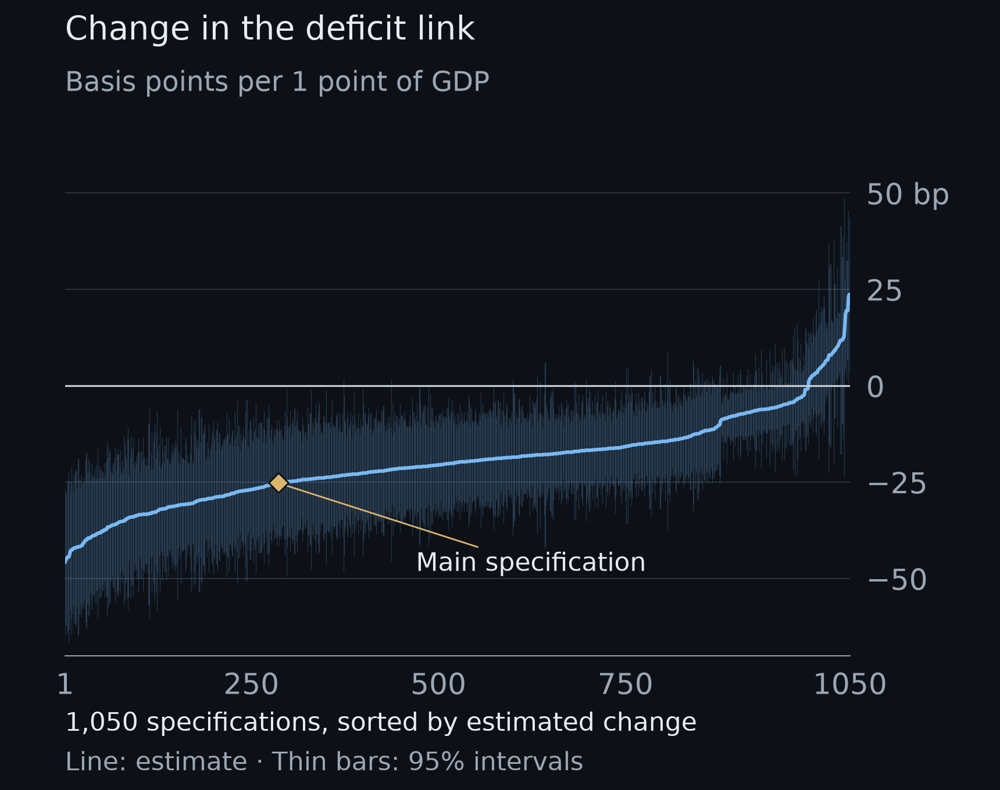
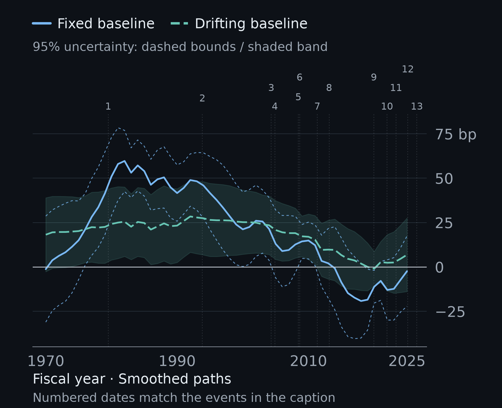
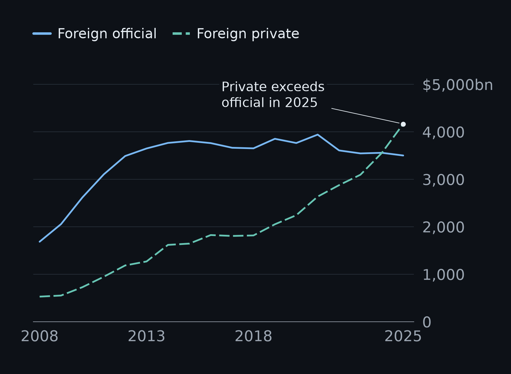
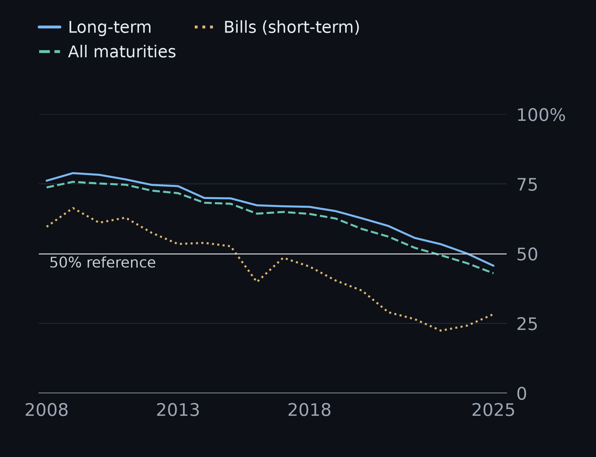
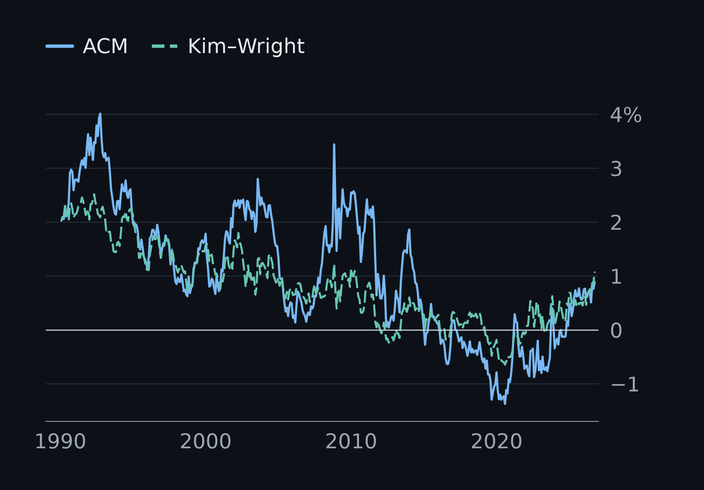

Independent Research · U.S. Treasury Markets
Fiscal Deficits and the Treasury Term Premium
A Weaker Association After 2008 and the Investor-Base Hypothesis
To the dismay of many economists, Washington appears to have grown apathetic toward a debt that looks increasingly insurmountable. Austerity is unpopular with any incumbent, so it is no wonder that arguably the largest issue facing the nation is rarely acted on. If the suits in Washington won’t address it, the job may fall to a portfolio manager in a Patagonia vest. Recent market headlines ask the obvious question: are we seeing the first signs of a return of the bond vigilantes?
In the early 1980s the economist Ed Yardeni coined the term “bond vigilantes” for investors who punished governments for reckless borrowing by dumping their bonds and driving up what it cost them to borrow: the market’s self-appointed enforcers of fiscal discipline. Governments around the world learned to fear them, and not even the global hegemon was exempt. From 1980 to 2007 the US data look as if the vigilantes were on patrol: a wider deficit usually came with a noticeably higher 10-year term premium, about 30 basis points for every extra point of GDP of deficit.
Since 2008, the same extra point of deficit has come with 8 basis points or less, roughly a quarter of the old effect. That number is also too imprecise to lean on: in five of the six main versions of the model, the plausible range around it stretches down to zero. In other words, the data cannot tell a small link apart from no link at all. The global financial landscape changed profoundly after the crisis. But what exactly stopped the vigilantes?
I follow that question from the fiscal relationship into the investor base. The first part tests how stable the association is. The second checks an ownership premise that might matter for its interpretation: whether foreign official investors have come to hold a larger share of foreign Treasury holdings. These are connected steps in an investigation, not a completed test of whether ownership caused the relationship to change.
At a glance
- ~30 bpBefore 2008, each extra point of GDP of deficit came with about 30 basis points more 10-year term premium, comparing years with the same debt-to-GDP ratio.
- 5 to 8 bpAfter 2008, in the four versions that use the deficit and debt alone. Add inflation and the output gap, or swap the New York Fed’s ACM premium for the Fed Board’s Kim-Wright estimate, and it falls to about zero (+0.9 and −1.2 bp).
- 83% of 1,050I re-ran the regression for every valid combination of eight choices in the declared grid: premium model, 5- or 10-year maturity, start year, fiscal timing, monthly or annual data, total or primary balance, controls and comparison date. In 83% of the 1,050 runs the link is lower after the comparison date and the drop is significant at the 5% level.
- No return yetTracked year by year, the 2025 estimate is −2.4 bp (range −22 to +17), under its post-2008 high of +9.3. The data don’t show the vigilantes coming back, but they can’t rule it out either.
What this shows: the split-sample comparisons generally find a weaker deficit–term-premium association after 2008. The time-varying tests show that the extent of the decline depends on how the premium’s baseline is modelled. What it doesn’t: why the relationship changed, or whether it is now coming back. It measures an association, not a cause, and January 2008 is a date I chose, not one the data picked. Why ask now: in 2026 the term premium climbed to its highest level in twelve years, which raised the question of whether the market is starting to charge for US fiscal risk again.
Numbers: article results, specifications table and the stress-test results.
Research History, Dates and Status
- Pricing analysis
- First published 20 October 2026; stress tests added 24 October; interpretation clarified 1 November. Numerical results are unchanged in this integrated article.
- Pricing observations
- Monthly data from January 1980 through January or September 2025, depending on fiscal timing; complete fiscal years 1981–2025. Stress tests extend to fiscal 1967.
- Pricing data vintage
- New York Fed ACM files of 9 and 22 October 2026; Kim-Wright from FRED; other FRED and Treasury series. Revised data, not real-time.
- Ownership analysis
- First published 1 November 2026; annual observations, 2008–2025. Data assembly completed; interpretation remains under review.
- Ownership explainer
- Who Buys the Debt? was published 20 October 2026, clarified 1 November and incorporated into the ownership note on 7 November.
- Scope
- Independent research using public data. This project is separate from my undergraduate degree thesis. The ownership evidence does not estimate price sensitivity or explain the change in the fiscal relationship.
01The Question and Why It Matters Now
For most governments the rule is simple. Borrow more, and investors ask to be paid more to lend to you for ten years: fiscal credibility gets priced. The United States is not most governments. It issues the world’s reserve currency and its safest asset, what France’s finance minister Valéry Giscard d’Estaing called an “exorbitant privilege”, and that lets it borrow on terms other countries can’t. So the question is whether the US bond market charges for fiscal risk at all, and when it stopped charging as much. If it charges, the term premium is one natural place to see it, though not the only one.
The question feels live. The US ran a deficit of about 5.8% of GDP in fiscal 2025, and in September 2026 the ACM estimate of the 10-year term premium closed the month at 0.89%, its highest month-end since April 2014. But a higher premium is a level. It does not tell you whether the premium has become more responsive to deficits. That is the question here: has the link between the fiscal balance and the term premium stayed stable over time?
02How I Looked at It
I compared the monthly 10-year term premium with the federal fiscal balance (as a share of GDP), holding the level of federal debt relative to GDP fixed. I let that relationship differ before and after January 2008. That is a comparison date I chose: the start of the year the financial crisis deepened and the Federal Reserve announced its first large-scale bond purchases (in November 2008). It is not a break the model found, and nearby dates from mid-2007 to 2010 give similar tests. Then I tested whether the fiscal link really changed, rather than just comparing two numbers by eye.
The fiscal balance is recorded with surpluses as positive numbers and deficits as negative ones, so "worse by one point" means a deficit one percentage point of GDP larger. I report everything in basis points of premium per point of GDP.
I checked the result five ways, because the first version had known weaknesses:
- Timing. The annual fiscal balance had been carried over the calendar year. Fiscal years run October to September, so I moved each year's figure to its own months.
- Repeated values. A yearly number copied across twelve months is not twelve observations. I re-ran the comparison with one row per fiscal year: 27 years before 2008 and 18 after.
- Uncertainty. The term premium moves slowly, so neighbouring months are not independent. I widened the window used to estimate uncertainty from 12 to 36 months.
- The business cycle. I added core inflation and the output gap, both allowed to matter differently after 2008.
- The model. I re-ran it with the Kim-Wright premium from 1990, on exactly the same months.
03What I Found

Across the six specifications displayed below, the earlier estimate is positive and its 95% confidence interval excludes zero. The later estimates are smaller, and their intervals include zero in five of the six specifications.
| Version | Before 2008 | 2008 onward | Change: p-value |
|---|---|---|---|
| Saved baseline: monthly, calendar-year timing | 29.5 (19.9 to 39.2) | 7.6 (0.2 to 14.9) | 0.0004 |
| Fiscal-year timing corrected, monthly | 30.3 (20.7 to 39.9) | 5.1 (-4.4 to 14.5) | 0.0002 |
| Same, 36-month uncertainty window | 30.3 (18.7 to 41.9) | 5.1 (-5.1 to 15.2) | 0.001 |
| One row per fiscal year | 30.2 (20.1 to 40.3) | 5.4 (-6.7 to 17.5) | 0.002 |
| Adding core inflation and the output gap | 25.9 (16.2 to 35.5) | 0.9 (-7.4 to 9.2) | 0.0001 |
| Kim-Wright premium instead of ACM (1990 onward) | 12.2 (3.2 to 21.3) | -1.2 (-5.1 to 2.7) | 0.008 |

Exhibit 4 shows the fiscal-year version directly: each point is one fiscal year. Before 2008 the points slope down from left to right, so wider deficits came with a higher premium. After 2008 the fitted line is close to flat, and the biggest deficit, fiscal 2020, sits below it.

04Stress Tests: Trying to Break the Result
A finding like this deserves a beating. So I examined it four ways, each with declared settings and a rule for interpreting the result. The tests use a fresh pull of the data (22 October 2026) and start as early as fiscal 1967.
Test 1: every version at once
Any regression is a stack of choices: which estimate of the premium, which years, which controls, which comparison date. A sceptic can always ask whether I picked the one stack that tells a good story. So I examined a declared grid of choices: 1,050 versions of the original model.
In 83% of them, the link between deficits and the premium is significantly weaker after the comparison date. The typical version shows it falling by about 20 basis points per point of GDP. It is weakest when I control for inflation and the business cycle, and on the Kim-Wright estimate of the premium.

Test 2: the link, year by year
A before-and-after comparison hides the timing. So I let the link drift from year to year and applied the declared question: is it coming back? For the latest fiscal year, 2025, the estimate is −2.4 basis points, with a range of −22 to +17. To count as a return, the bottom of that range had to clear +9.3, the highest reading since 2008. It does not.
Two cautions. The bar is deliberately high, so this is no evidence of a return rather than proof of none. And the estimate uses only data up to each year but comes from today's revised figures, so it is a retrospective reading, not what an investor could have seen in real time.
Test 3: was it really inflation?
The early 1980s are where the link looks strongest, and they are also the years of double-digit inflation. Perhaps investors were simply charging for inflation risk, and deficits happened to be large at the same time. So I held inflation fixed.
It changed almost nothing. Inflation's own coefficient came out close to zero (−0.044, with a range of −0.170 to +0.082), and the 1982 link barely moved (+64 basis points against +60). Measured inflation does not explain it. That does not clear the deficit, though: if bigger deficits made investors fear inflation, holding inflation fixed would also hide part of the fiscal effect.
Test 4: the era problem
The real difficulty is credibility. In 1981 the Fed was fighting inflation, and inflation was falling: core prices rose 9.8% over the year to January 1981 and 6.5% over the year to June 1982. Yet the 10-year yield (as fitted by the New York Fed's ACM model) rose from 12.0% in January 1981 to 14.2% in October, and the term premium from 2.9% to 4.7%.
The market did not believe the Fed would see it through.
Marvin Goodfriend and Robert King make this the core of the Volcker story: the disinflation was costly because it was not believed, and Volcker's committee read long-term rates as a verdict on its own credibility. That makes the early 1980s a hard place to measure anything. The premium was high for reasons that had little to do with any single year's deficit, and a model with a fixed baseline can mistake that high-water mark for a strong deficit link. So the last test lets the premium's baseline move. The 1982 link drops from about +60 to about +25 basis points per point of GDP (range +6 to +45), still clearly positive.
But the answer depends on how fast that baseline may move. In the primary version, allowing the baseline to drift reduces the estimated early fade to 0.3 basis points, with a range of −24 to +24. With a slowly moving baseline, about half the early-fade point estimate remains; with a single baseline step in 2008, its point estimate is approximately unchanged. The freely drifting baseline is the primary version of this test. Neither the early nor the later retreat meets its declared survival rule. Its year-to-year movements correlate 0.90 with those of the premium, so it absorbs substantial shared variation. That does not establish which specification captures the correct causal structure.

The downloadable results record the declared settings and decision rules, their outcomes, and the data and code versions. Later diagnostics are separately labeled in those files. Results files: Test 1, Test 2, Test 3, Test 4.
05What the Pricing Evidence Leaves Unresolved
The split-sample comparisons and specification grid generally show a weaker deficit–term-premium association after the comparison date. The time-varying tests make the conclusion more qualified: how much of the decline remains depends on how the premium’s baseline is modelled. This is evidence about an estimated relationship, not a direct measure of the price investors charge for fiscal risk.
What did not survive is a tidy story about when and how the change happened. The early 1980s, when the link looked strongest, were also when the Fed had the least credibility, and these data cannot pull the two apart. For 1982 specifically, the estimated link ranges from about 25 to 60 basis points per point of GDP across the two baseline specifications. These are year-specific estimates, not estimates for the entire pre-2008 period. And I do not conclude that fiscal risk stopped mattering, or that any one institution caused the change.
Competing Explanations
Timing. The largest deficits after 2008 arrived in recessions and crises, in 2009 and 2020, exactly when investors rushed into Treasuries and the Federal Reserve bought bonds at scale. Those forces push the premium down at the same moment deficits balloon. A weaker average link could therefore reflect when deficits happened rather than a change in how investors treat them. Adding the output gap only partly addresses this, because crises are more than a low output gap.
The premium's long fall. Credibility won back after Volcker, bonds becoming a safe hedge and a world awash in savings all pushed the premium down over four decades. They may have done most of the work, with deficits mattering less than the early numbers suggest. Test 4 leaves room for that.
06Turning to the Investor Base
That left me with a question the regressions could not answer: had the people holding Treasury debt changed in a way that mattered for its pricing? I initially wondered whether a growing share of official buyers might help explain the weaker fiscal relationship. Before treating that as an explanation, though, I needed to check its premise. Had the foreign investor base actually become more official?
The published figures point in the opposite direction over this sample. That made the measurement question more interesting to me. Who is classified as official, what does a change in holdings represent, and how much does the answer depend on the denominator?
The annual Treasury International Capital survey lets me examine that narrower question. I use public aggregate tables, not confidential security-level records. The series assembled here begins in 2008 and covers foreign investors, so it cannot by itself establish what changed across the pre- and post-2008 pricing samples.
Who holds Treasuries
US Treasury debt held by the public is spread across very different investors:
- The Federal Reserve, which buys and sells for monetary-policy reasons, not for return.
- Foreign official investors, such as central banks managing reserves, whose mandates can emphasize liquidity, safety and exchange-rate policy alongside return.
- Foreign private investors, such as banks, insurers and funds abroad.
- US banks, insurers, pension funds and money-market funds, often bound by regulation or by the liabilities they need to match.
- Hedge funds, other asset managers and households, with different strategies, constraints and investment horizons.
Three things that are easy to confuse
- Holdings: how much of the stock each group owns at a point in time.
- Purchases: how much each group adds or sells over a period.
- Price sensitivity (elasticity): how much a group changes its holdings when yields move. Lower elasticity means a smaller demand response to a given price change, holding other influences fixed. These responses must be estimated; an official or private label does not measure them.
A large holder is not necessarily a price-setter. What matters for how far yields move is the price sensitivity of the investors who have to absorb new supply.
07Who Holds the Treasuries Held Abroad?
Annual TIC evidence, 2008–2025. Data assembly is completed; interpretation remains under review.
Foreign official holdings of long-term Treasuries rose from $1,684 billion in 2008 to a sample peak of $3,940 billion in 2021, then declined to $3,500 billion in 2025. Private foreign holdings grew from $527 billion to $4,165 billion between the sample endpoints. These are market-value positions, not cumulative purchases.

The official share of foreign long-term holdings fell substantially over the period, from 76.2% to 45.7%, although it did not fall every year. Across all maturities, the corresponding share fell from 73.7% to 43.0%, using the published rounded levels to calculate the combined share.

| Original maturity | First observed year |
|---|---|
| Short-term: one year or less | 2016 |
| All maturities | 2023 |
| Long-term: over one year | 2025 |
In 2024, official long-term holdings were still ahead by just $3 billion, about 0.04% of foreign long-term holdings. That is a small gap, but this exercise does not estimate an uncertainty band around it. A ten-year note with three months remaining is still long-term here: original maturity describes the instrument, not its purchase date or the holder’s current duration exposure.
08What the Holdings Numbers Actually Measure
A share of foreign holdings is not a share of the whole market. Foreign investors together held 52.7% of all marketable Treasury debt at market value in 2008 and 33.5% in 2025. That separate denominator includes U.S. holders and the Federal Reserve. It is also different from total federal debt. The market-wide series is kept in its own file.
A holdings change is not a transaction flow. In the year to June 2025, the report records an approximately $60 billion decline in foreign official long-term Treasury holdings. Its accounting includes roughly $100 billion of net sales, $140 billion of positive valuation changes and $110 billion of other negative adjustments. Rounded components do not sum exactly to the rounded total. Leaving out the residual would tell an incomplete story. This package does not reconstruct that decomposition for every year. Source: report Table 1.
What the Categories Leave Open
- Official does not mean price-inelastic. The category follows Treasury’s institutional definition, including central banks, finance ministries and certain other official institutions. It is not an estimated demand curve.
- Private is a broad category. Banks, funds, insurers and other holders can have different mandates and responses to risk. This aggregate split does not identify which groups drove the increase.
- Custody affects what reporters can see. Some securities recorded through private intermediaries may ultimately belong to official institutions. Country attribution can reflect the custodian’s location when the ultimate holder is not visible to the U.S. reporter. This dataset cannot quantify that amount or identify a particular government behind a custody-center total; the limitation does not establish deliberate concealment. See the TIC FAQ.
- Ownership is not a pricing explanation. A smaller official share does not establish why it changed or how it affected yields. The section on price sensitivity below discusses the separate question of estimating demand responses.
09How Ownership Could Matter for Pricing
A smaller official share changes the description of the investor base. It does not, by itself, tell me how the market would respond to another dollar of Treasury supply. For that, the distinction is between how much investors hold and how their demand responds when prices move.
What a recent Federal Reserve paper finds
Daniel Beltran and Canlin Li (IFDP 1447, September 2026) estimate how price-sensitive each investor group is, then combine those estimates with each group’s share of the market. Their findings, in plain terms:
- The Treasury market as a whole has become more price-sensitive since the early 2000s, mainly because price-inelastic foreign official investors now hold a smaller share and more price-elastic hedge funds and households a larger one.
- In normal times, a more price-sensitive market means smaller yield moves for a given change in supply: elastic investors step in after a small move in price.
- For 2026Q1, they estimate that an extra $100 billion of Treasury bond supply raises five-year yields by about 3 basis points, against around 65 in the early 2000s. Most of that fall reflects the larger Treasury bond market ($23.8 trillion held by the public in 2026Q1, against $2.5 trillion in 2000). Scaled to 1% of that market, the estimated effect is about 8 basis points in 2026Q1, against about 15 from 2000 to 2015.
- The flip side is fragility. When elastic investors step back in stress, as in March 2020, the market suddenly becomes much less elastic and the same shock moves yields much more.
Two effects are easy to mix up here. In this framework, a larger share of price-inelastic holders makes yields more responsive to supply shocks, even though their buying can push the level of yields down. It is the elastic buyers who dampen the response in normal times, and their absence in stress that amplifies it.
Why This Matters for Fiscal Risk
The results above generally show a weaker deficit–term-premium association after 2008, with important sensitivity to the model’s baseline. A natural question is whether changes in who holds the debt help explain that. The direction is not obvious: in Beltran and Li’s framework, a more price-inelastic holder base would amplify supply effects rather than mute them. I have not tested this. Doing it properly needs a design that separates holder composition from the crises and Fed purchases that changed at the same time.
The quantities are also different. Their supply estimates concern five-year yields, while my fiscal analysis uses an estimated ten-year term premium. The TIC long-term category includes instruments with an original maturity over one year; it is not a measure of ten-year duration exposure.
Limits of the Demand Estimates
- In the Fed’s Financial Accounts, the household sector, which includes hedge funds, is largely a residual: what is left after other sectors are measured.
- The authors treat these as sample-average estimates, not fixed structural parameters; their values depend on the model and identification assumptions.
10What the Evidence Cannot Establish
- Cause. These are associations in a premium that is itself a model estimate. They do not show that deficits raised the premium, or that anything specific weakened that effect.
- Timing. I chose January 2008. A search that lets the data pick breaks places one at August 2004 when only one is allowed, and August 2004 and January 2020 when two are; a criterion that picks the number of breaks chooses the maximum allowed (four). Whether the link faded gradually or broke around 2008 depends on modelling choices the data cannot settle.
- Precision. There are only 27 and 18 fiscal-year observations. A wide interval after 2008 means the data are inconclusive about the size of the later link, not that it is exactly zero.
- The present. The data are today's revised figures, and the latest fiscal year ends in September 2025, a year before the premium hit its highest month-end since April 2014.
- Different samples and measures. The annual ownership series starts in 2008, uses end-June positions and separates foreign official and private holdings. It does not cover the earlier pricing sample or describe the entire domestic investor base. Fiscal-year deficits, monthly premia and end-June holdings would need to be aligned before any joint test.
- Different denominators. The pricing model controls for gross federal debt, including government accounts. The market-wide ownership comparison uses marketable Treasuries at market value. These measures cannot be substituted for one another.
- Ownership and demand. The official/private split does not identify the causes of holdings changes or estimate price elasticity. No analysis here establishes that a shift in the investor base explains the weaker fiscal association.
11What Would Change My Mind
Open question, not yet tested. Could changes in the investor base help account for the changing deficit–term-premium relationship?
- If the later link reappeared once crisis years are handled explicitly, for example by excluding or modelling 2009 and 2020, the "weaker link" would look like a timing artefact.
- If fiscal news itself, such as debt-limit standoffs or rating downgrades, moved the premium as much after 2008 as before, the weaker annual link would say little about how markets treat fiscal risk.
- If the next fiscal years pushed the year-by-year estimate clearly above its post-2008 range, the vigilantes would be back in the data, not just in the headlines.
I also want to understand how much aggregate holdings changes reflect transactions, valuation and reporting differences before treating the shift in ownership as an explanation for market pricing. A joint test would first need comparable dates, maturity definitions and measures of transactions, then a design that addresses crises, monetary policy and investors responding to yields.
For now, the ownership evidence challenges one premise I started with: foreign official investors held a smaller share of foreign long-term Treasury holdings in 2025 than in 2008. That narrows the investigation; it does not settle what weakened the fiscal relationship. The distinction between a change in the level of yields and a change in their response to supply remains central.
12Sources, Checks and Reproducibility
Every chart can be opened at full size. The coordinated presentation uses the existing chart data and saved estimates; the underlying numerical files are unchanged. Chart provenance and source checks (JSON).
Pricing Data and Methods
- Term premium: New York Fed, ACM term premia; Federal Reserve Board Kim-Wright estimate via FRED THREEFYTP10.
- Fiscal balance: FRED FYFSGDA188S (federal surplus or deficit, % of GDP, fiscal years).
- Debt and controls: FRED GFDEBTN (gross federal debt), nominal GDP, PCEPILFE (core PCE prices), GDPC1 and GDPPOT (output gap).
- Further reading: Goodfriend and King, "The Incredible Volcker Disinflation"; Laubach, "New Evidence on the Interest Rate Effects of Budget Deficits and Debt", who finds about 25 basis points on long-term rates per point of projected deficit, a related but different measure.
- Method: Adrian, Crump and Moench (2013), "Pricing the Term Structure with Linear Regressions," Journal of Financial Economics; Kim and Wright (2005), Federal Reserve FEDS 2005-33.
- Results: the estimates in the pricing analysis come from generated results files, with chart data linked under each exhibit. The pricing code is in a private research repository; the results files record the code version and data fingerprints.
Ownership Data, Checks and Contribution
The principal source is Foreign Portfolio Holdings of U.S. Securities, as of June 30, 2025, published in April 2026 by Treasury and the Federal Reserve. Its Exhibits 7 and 8 provide the 2008–2025 official/private series. Earlier reports from 2008, 2016 and 2024 provide selected vintage comparisons; Treasury’s historical data file supplies a separate totals check.
The checks reconcile official and private holdings to totals, calculated shares to published percentages, and totals across tables and files, allowing for stated rounding tolerances. No revisions were found in 54 overlapping Treasury rows from those selected vintages. That does not mean TIC data are never revised. Interim annual surveys use a smaller reporting panel than benchmark surveys, with coverage adjustments described in the methodology.
The full pipeline was rerun in a temporary copy by a separate AI reviewer, reproducing all nine CSV artifacts and the saved validation results. The public analytical file subsequently standardizes the 2024 date field to June 28, matching the report title; its numerical values and all chart data remain unchanged.
- Official/private analytical dataset (CSV): 54 observations, three maturity definitions.
- Foreign share of all marketable Treasuries (CSV): 18 annual observations.
- Definitions, source inventory and methodological limits (Markdown).
- Saved validation report (Markdown) and machine-readable checks (JSON).
- Code and extracted tables (ZIP). Includes exact dependencies and instructions to rebuild the datasets and charts from the included extracts. Full PDF extraction and source-hash validation require the original public source files, which are linked but not bundled. Live source files may change.
Contribution. I framed the question and scope. Extraction and validation were developed with an AI coding assistant under my direction. I am reviewing the interpretation; Treasury and the Federal Reserve produce the underlying statistics.
Interpretation and Demand Literature
- Daniel Beltran and Canlin Li, “Estimating Yield Impacts of Treasury Demand and Supply Changes,” IFDP 1447, September 2026. The demand-elasticity and yield-impact estimates discussed above are their findings, not estimates from this project.
- Treasury’s official-institution definitions and TIC FAQ; the Federal Reserve’s Financial Accounts.
Research and education only. The pricing results describe estimated associations; the ownership analysis describes published holdings patterns and remains under interpretive review. Nothing here is investment advice.
Technical appendix
Model
Monthly, with separate intercepts and slopes after the comparison date:
TPt = a + b·FBt + c·Debtt + d·Postt + e·(Postt·FBt) + f·(Postt·Debtt) + ut
TP is the 10-year term premium (percent), FB the fiscal balance (% of GDP, surplus positive), Debt gross federal debt (FRED GFDEBTN, which includes debt held by government accounts) over annualized nominal GDP, and Post equals 1 from January 2008 (fiscal year 2008 for annual rows). The fiscal slope is b before and b + e after; the test of the change is the test of e = 0. Reported basis points are -100 times the slope. Because every coefficient can change, the period slopes equal those from two separate regressions; testing e inside one model uses a single covariance estimate.
The debt coefficient is negative in the saved main specifications before and after 2008 (debt_gdp_coef in the results file). This does not establish that more debt lowers the premium. Debt rose while the premium trended down over much of the sample, so the coefficient may capture shared trends as well as other influences. The fiscal slopes reported above are conditional on this debt control.
Uncertainty
Monthly versions use Newey-West standard errors with 12 or 36 lags. Fiscal-year versions use heteroskedasticity-robust (HC1) errors; Newey-West with 2 lags gives p = 0.006 for the change. Intervals are 95%.
Sample
Monthly rows from January 1980, the first month with all inputs in the frozen data files (a start set by data coverage, now stated explicitly), to January 2025 with calendar-year timing and September 2025 with fiscal-year timing: 336 rows before 2008 and 205 or 213 after. Fiscal-year rows cover complete fiscal years 1981-2007 and 2008-2025. The stress tests use a fresh pull of the data and fiscal years back to 1967, with the July-June fiscal years before 1977 handled explicitly.
What changed from the saved baseline
The saved baseline's coefficients are reproduced exactly before anything else is run; its intervals here come from the pooled model and differ very slightly from the saved ones. The corrections are the fiscal-year timing, the fiscal-year rows, the joint test of the change and the added controls.
Two term premium models
On identical months from 1990, the ACM link is 30.6 basis points before 2008 and 5.1 after (change p = 0.0006); Kim-Wright gives 12.2 and -1.2 (p = 0.008). With one row per fiscal year, the Kim-Wright check is weaker: its earlier estimate's 95% interval (-1.1 to 22.3) includes zero, and the change has p = 0.07.

A data note
A monthly Treasury Statement measure of the deficit is also available from 1980, but its 12-month totals miss the annual series in fiscal years 1981-1984. Until late 1984 the monthly figures left out off-budget federal entities, mainly the Federal Financing Bank, which the 1985 budget law brought into the official totals. Adding the reported off-budget amounts closes the gap to under $0.1 billion a year. This article uses the annual series, which already includes them.